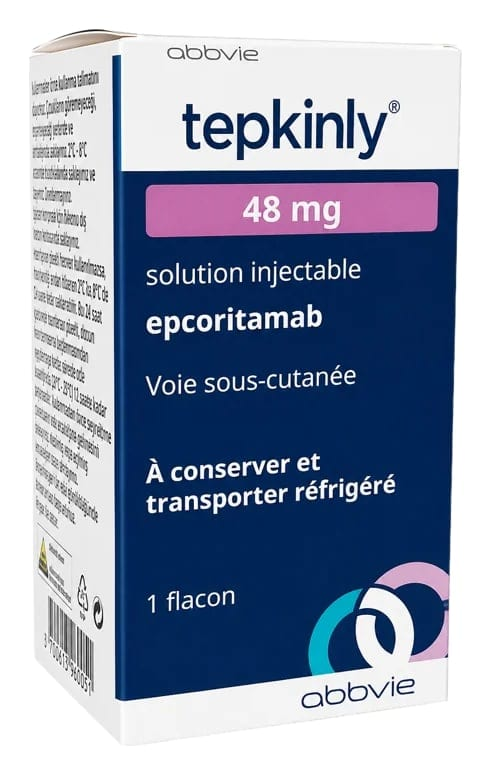

Tepkinly 48 mg Enjeksiyonluk Çözelti (1 adet)

Ne için kullanılır
KT · Bölüm 1TEPKİNLY nedir? TEPKİNLY, epcoritamab etkin maddesini içeren bir kanser ilacıdır. TEPKİNLY, Diffüz Büyük B Hücreli Lenfoma (DBBHL) ve Foliküler Lenfoma (FL) adı verilen kan kanseri olan yetişkin hastalarda, önceki en az iki tedaviden sonra hastalık nüks ederse veya önceki tedaviye yanıt vermezse tedavi etmek için tek başına (monoterapi) kullanılır.
TEPKİNLY nasıl etki eder? Epcoritamab, kendi bağışıklık sisteminizin kanser (lenfoma) hücrelerine saldırmasına yardımcı olmak için özel olarak tasarlanmıştır. Epcoritamab vücudunuzun bağışıklık hücrelerine ve kanser hücrelerine bağlanıp onları bir araya getirerek etki eder, böylece bağışıklık sisteminiz kanser hücrelerini yok edebilir.
TEPKİNLY enjeksiyonluk çözelti konsantresidir. Bir cam flakonda sunulan, renksiz ila hafif sarı renkte bir çözeltidir. Her bir karton kutuda 1 flakon bulunur.